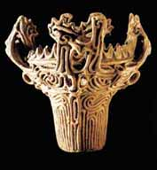
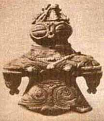

Stone Age
Ancient Stone Age (Paleolithic, 40-12 thousand years BC)
During the Paleolithic period, Japan had not yet separated from the Asian continent and was one with it.
The Paleolithic is characterized by one-handed tools - spears, lances, their stone tips were discovered by archaeologists.
Middle Stone Age (Mesolithic, 12-10 thousand years BC)
Bow and arrows appear. At that time, along with stone implements, there was also ceramics: earthen vessels with linear relief stuck-on ornament in the form of rollers.
In 10 - 8 millennia BC. as a result of the melting of glaciers, the level of the World Ocean rose by about 100 m. It was at this time that Japan separated from the mainland and acquired its modern outlines.
New Stone Age (Neolithic, 8 thousand - 300 BC)
|  |
The domination of two-handed tools, primarily fishing tackle and bow with arrows, stone and bone hunting and fishing tools. Boats were made from solid wood. Hunting and fishing, as well as gathering and farming, became widespread. A specific "rope ceramics" (jomon) appears. The term jomon Japanese historians designate the entire Neolithic period. |
|
Female clay images of dogu, used for various ritual purposes, with exaggerated features of pregnant women were discovered near the hearths, in ritual places and in burials. The surviving dogu turned out to be hollow, with the bones of newborns inside. Dogu testifies to the high social status of women in ancient Japan. The main population of Japan at that time consisted of the ancestors of the modern Ainu, therefore the Jomon period is sometimes referred to as the "land of the Ainu". |
 |
The Ainu had a significant influence on neighboring peoples, passing on to them production skills, beliefs and rituals, the origins of the formation of which date back to Southeast Asia.